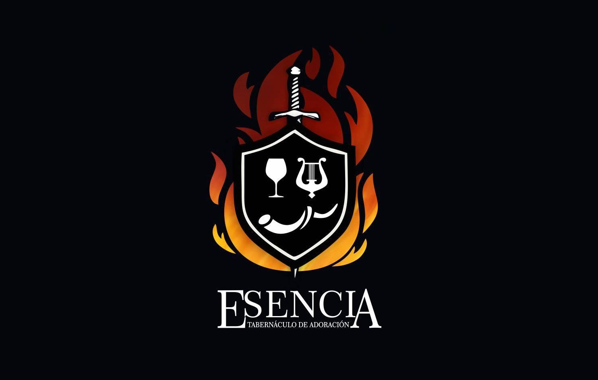

Escuela Ministerial Esencia
La Escuela Ministerial Esencia es un espacio de formación y equipamiento integral para líderes y servidores que desean profundizar en su llamado y desarrollar sus dones ministeriales. A través de un programa estructurado, brindamos herramientas prácticas y fundamentos bíblicos sólidos para el servicio efectivo en el Reino de Dios.
Nuestro enfoque incluye formación en liderazgo, adoración, intercesión y servicio comunitario, preparando a los participantes para impactar sus comunidades con excelencia y pasión por el propósito divino.